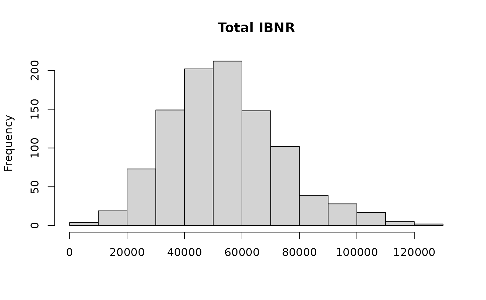

Simulates the distribution of the reserves with England and Verrall's bootstrap of the over-dispersed Poisson chain ladder: resampling its residuals for the estimation error, then simulating each future payment for the process error.
Arguments
- triangle
A triangle of cumulative claims, as for
chain_ladder.- n
The number of simulations.
- process
The distribution of the future increments:
"gamma"(the default) or"odp", the over-dispersed Poisson.- tail
A tail factor applied to each simulated ultimate (1, the default, for none).
- probs
The probabilities of the percentiles reported.
- seed
A whole number for a reproducible run, or
NULL(the default) to use the current random number stream. The stream of the R session is restored after a run with a seed.
Value
An object of class netsimr_bootstrap, a list with:
- by_origin
a data frame with each origin's latest claims, mean ultimate, mean IBNR, its standard deviation and coefficient of variation, and the percentiles of the IBNR;
- total
the same for the total;
- reserves
the simulated IBNR, a matrix with a row per simulation and a column per origin;
- total_reserves
the simulated total IBNR;
- residuals, fitted, scale, factors
the scaled Pearson residuals, the fitted incremental claims, \(\phi\) and the chain ladder factors.
Details
The volume-weighted chain ladder factors of the whole triangle give fitted incremental claims \(m_{ij}\), working back from the latest diagonal. The Pearson residuals \((X_{ij} - m_{ij}) / \sqrt{|m_{ij}|}\) give the scale parameter \(\phi\), their sum of squares over \(N - p\) (\(N\) incremental values and \(p\) parameters, one per origin and one per development period less one), and, scaled by \(\sqrt{N / (N - p)}\), the residuals that are resampled; the residuals that are zero by construction (an origin with one value, a development period with one origin) are left out of the sampling. Each simulation builds a pseudo triangle \(m_{ij} + r^*_{ij} \sqrt{|m_{ij}|}\), refits the chain ladder to it and projects its latest diagonal, then draws each future increment from a gamma or over-dispersed Poisson distribution with that mean and variance \(\phi\) times it. A tail factor scales each simulated ultimate.
References
England, P. D. and Verrall, R. J. (1999). Analytic and bootstrap estimates of prediction errors in claims reserving. Insurance: Mathematics and Economics 25(3), 281-293.
England, P. D. and Verrall, R. J. (2002). Stochastic claims reserving in general insurance. British Actuarial Journal 8(3), 443-518.
Examples
boot <- bootstrap_chain_ladder(raa_triangle, n = 1000, seed = 1)
boot$total
#> latest ultimate ibnr se cv p75
#> 1.609870e+05 2.149286e+05 5.394164e+04 1.966292e+04 3.645221e-01 6.591314e+04
#> p90 p95 p99 p99.5
#> 7.899916e+04 9.020939e+04 1.068784e+05 1.104602e+05
hist(boot$total_reserves, main = "Total IBNR", xlab = NULL)
